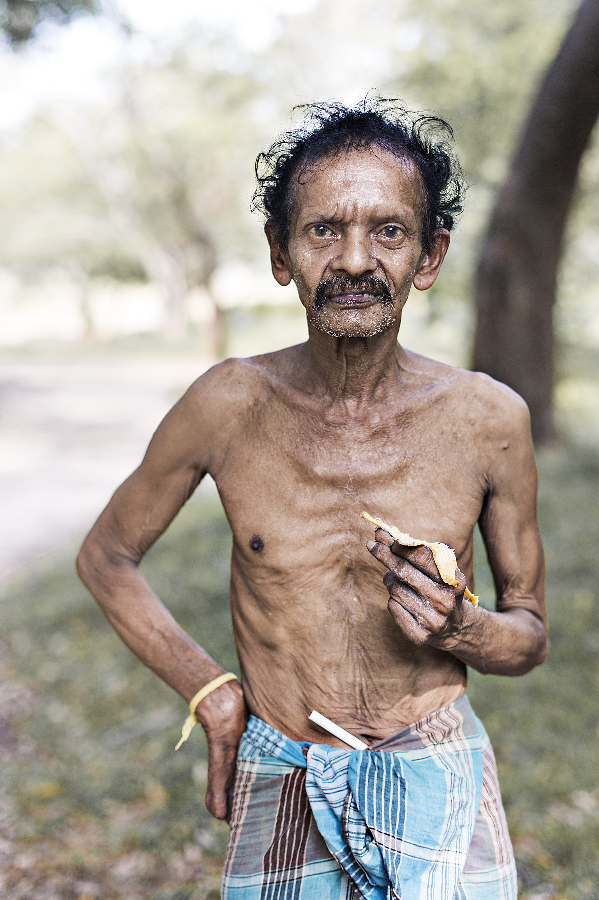

Sobre mí raro.
Banana Men.
No hables demasiado de ti.
Un ejercicio estoico que me recuerdo cada día:
No hables demasiado de ti.
Un día le dije a mi padre:
—¿Conoces a los estoicos?
—Los conozco, pero hay que echarle un par…
Eso trato de hacer, cada día. Echarle un par.
A lo que iba.
No trates de hablar demasiado de ti en las reuniones.
Vas a parecer mucho más interesante.
Hazme caso.
En este raro "sobre mí", te hablaré de otro hombre.
Banana Men.
Antes de que nacieran mis hijas, mi mujer y yo viajábamos como locos.
Cada mes.
Un mes sí.
Otro también.
Puentes.
Días sueltos.
Daba igual.
Cuando nos casamos, pusimos la fecha en el registro calculando los 15 días libres que te dan.
Para irnos lo más lejos posible.
Nueva Zelanda.
Así nos la gastábamos.
Cuando estábamos a puntito de tener hijas, pensábamos:
«Nos vamos lo más lejos posible, que luego cuando seamos más viejitos no vamos a tener ganas de meternos en un avión 17 horas.»
Aparecimos en Sri Lanka.
Una isla al sur de Asia.
Un espectáculo.
Fuimos con otra pareja de amigos y alquilamos un par de tuk-tuks para recorrernos media isla.
Jóvenes y aventureros, ya me entiendes.
El primer día fuimos a la zona central del país.
Todo selva.
Alguna casa por ahí perdida.
Teníamos un hambre de muerte y nos dio por parar a hacer un picnic en mitad de la selva.
Olé nuestros…
…en fin.
Como buenos españoles, llevábamos embutido y pan.
Habíamos leído que allí le echaban picante hasta al agua.
Y aquí aparece mi hombre.
Vi a un hombre entre el palmeral.
Me acerqué con cuidado.
No parecía peligroso, pero vagaba solo.
Con pinta extraña.
Debió oler el chorizo porque no tengo ni idea de dónde había salido ni cómo nos encontró.
—¿Puedo hacerte una foto? —le dije.
Él señaló mi plátano.
El que llevaba en la mano.
No pienses mal.
Y se lo di.
Luego disparé.

Muchas veces me acuerdo de este retrato.
Quizá para ti no tiene nada de especial.
Para mí sí.
Luego leímos que había una especie de apestados sociales en la zona.
Personas que se apartaban de la sociedad.
Vivían de la naturaleza.
Sin nada.
Y desde entonces no he dejado de pensar en eso.
En las clases sociales que nos quieren vender.
Te lo explican en TikTok, en YouTube y te marcan el rango, la pirámide, tipos de riqueza…
…pamplinas.
Cuando le quitas el ruido, solo hay tres clases.
No diecisiete.
No cuatro.
No dos.
Tres.
Clase 1. Los que no tienen lo que desean o necesitan. Tengan más o tengan menos dinero. Trabajan sin rumbo y se comen lo que les ponen delante.
Clase 2. Los que tienen lo que quieren, pero dependen de su trabajo para mantenerlo. Si se cae el trabajo, se cae todo. Son los privilegiados. No está mal. Pero tampoco eres libre.
Clase 3. Los que tienen lo que desean y no tienen ninguna obligación de trabajar. Todo lo que hacen lo hacen por placer, propósito o diversión. Aquí, y solo aquí, te has pasado el juego.
Ojo con esto.
En la clase 3 puede estar una mujer viviendo en un pueblo de Segovia, con un patrimonio de 700.000€ que le da 3.000€ al mes netos, mientras enseña yoga a una comunidad pequeña porque le da la gana.
Y en la clase 1 puede estar un tipo con 7 millones de euros, 200 empleados y 15 horas de reuniones diarias.
Solo eres rico de verdad si el dinero te hace libre.
Si no,
solo tienes dinero.
Que no es lo mismo.
¿Adivinas de qué clase social aspiran a ser mis cartas?
Exacto.